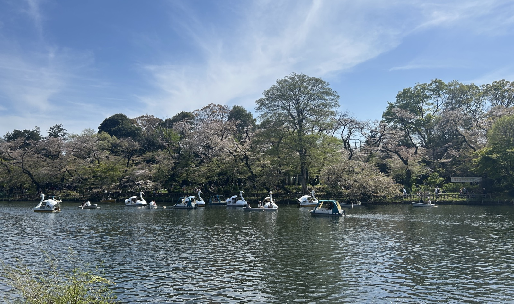

PARKS パークス
映画『PARKS』の公式予告と、井の頭公園で流れた記念放送の記録。2本の短い映像を切り替えて楽しむ。
PARKS 公式予告 · 1分59秒
2017年の発売告知を含む予告です。作品・ディスク情報は下の公式サイトで確認できます。
日活公式YouTubeで観る ↗井の頭公園100周年記念放送 · 57秒
やくしまるえつこの声を公園で記録した公式サンプルです。現在の放送案内ではありません。この動画には提供元の字幕がありません。
みらいレコーズ公式YouTubeで観る ↗
気になったことから
この音は、
どこから来たのだろう。
背景を知ったら、同じ予告をもう一度。
なぜ、脚本の段階から音楽を？
瀬田なつき監督は、登場人物が音楽を作る物語なので、脚本段階からトクマルシューゴと曲の方向を考えたと説明しています。文字だけでは曖昧だった演奏のイメージを、彼の提案が具体的にしたといいます。
出典：瀬田なつき × トクマルシューゴ / Mikiki（2017年）
もう一度観るなら：音楽を作る人の姿に目を向けてみる。
予告へ戻る ↑なぜ、トクマルシューゴだった？
監督によると、樋口泰人プロデューサーが、公園に縁のあるトクマルシューゴを紹介しました。監督も以前から彼の音楽を聴いており、本人は10代から井の頭公園でバンドの練習をしていたと話しています。
出典：瀬田なつき × トクマルシューゴ / Mikiki（2017年）
もう一度観るなら：作り手にも馴染みのあった公園を見る。
予告へ戻る ↑映画から遡ると、音はどこで生まれた？
相対性理論「弁天様はスピリチュア」の出発点は、解体前のバウスシアターでのセッション。やくしまるえつこは、その合間に歩いた井の頭公園の印象も重ねたと語っています。映画の話が来る前から育っていた曲です。
- 映画のエンディングへ
『PARKS パークス』で「弁天様はスピリチュア」が流れる。
出典：販売元の作品情報 - アルバムに収められる
この曲を収めた『天声ジングル』が発売。CD、レコード、カセットにもなる。
出典：みらいレコーズの発売案内 - 閉館した映画館で、曲を育てる
6月12・13日、解体前のバウスシアターでの録音から、この曲の制作が始まる。
出典：みらいレコーズの制作記録 - 映画を映しながら演奏する
相対性理論はバウスで無声映画『月世界旅行』を上映しながら演奏した。やくしまるは、この経験から映像を流して曲を作る試みへ進んだと語る。
出典：やくしまるえつこ / CINRA（作品協賛記事）
この曲は、公園の100周年記念放送にも使われました。
公園で流れた声を聴く ↑曲が生まれた経緯を辿っています。映画の結末の解説ではありません。
映画館での演奏から、曲が育つまでを読む →
写真：Htanaungg / Wikimedia Commons · CC BY-SA 4.0（縮小した既存画像を使用）
映画の外にも、つながりがある。
映画館から映画へ。
そして、公園へ。
配給元boidは、閉館したバウスシアターのオーナーから、吉祥寺と井の頭公園の映画を作りたいという電話があったことを、企画の始まりとして記しています。